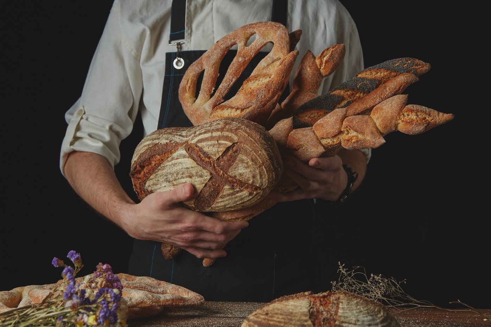
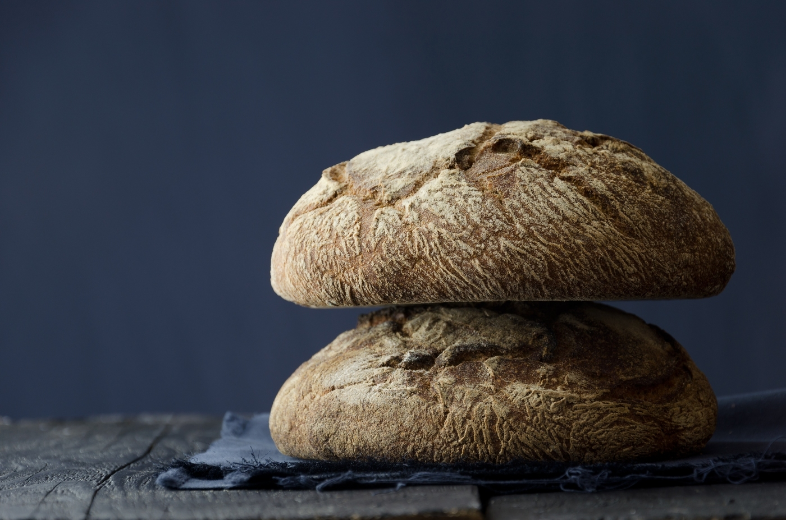

<link rel="stylesheet" href="style.css">

<section class="featured">
<h3 class="featured__title">Featured Breads</h3>
<div class="featured__types"></div>
<div class="featured__type"></div>
<h3>Quinoa Sourdough</h3>
<p>Handmade from quinoa, soybeans, and soy flour, this kind of bread contains more protein than many others, and its mild taste makes it ideal to taste with salted butter.</p>

<div class="featured__type"></div>
<h3>Danish Sourdough</h3>
<p>This popular full of texture and flavor Danish bread is healthy, tasty, and can be preserved for a long time. By tradition, it is served with cold butter, meat, fish, or cheese.</p>

<div class="featured__type"></div>
<h3>Cranberry Sourdough</h3>
<p>Being a classic seasonal centerpiece, this nutritious bread is charged with cranberries and pecans. It can be perfectly combined with cooked meat or cheese.</p>

<div class="featured__type"></div>
<h3>Hove Wholemeal</h3>
<p>This Hove inspired vegan wholemeal loaf is made from such organic ingredients as wholemeal wheat flour, oats, salt, and olive oil. It is ideal to create healthy sandwiches.</p>

</section>